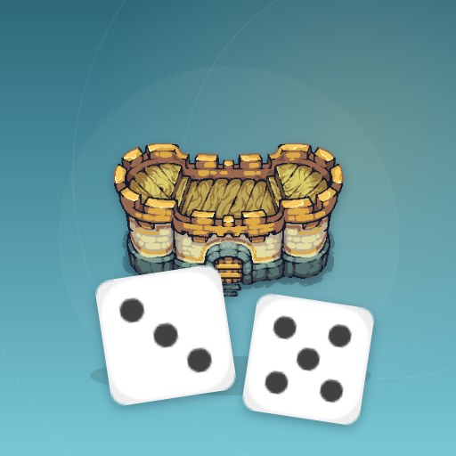

<- all projects

Little Empires
PC
Volume
Live
Roll two dice, pick one, and build a little town between rolls.
Little Empires is a dice board game with city-building decisions between rolls. Roll two dice, choose one and decide which way to travel, taking the outer road or a shortcut at crossroads to reach the resources you need. Build six kinds of businesses and upgrade them through three levels, collect a town dividend every 24 die steps in either direction, and earn extra from matching business sets. Trade resources and make choices in town events. Raise three landmarks to open the next district, where six district charters change the rules, and try a daily seeded 30-roll challenge that keeps your main town safe.